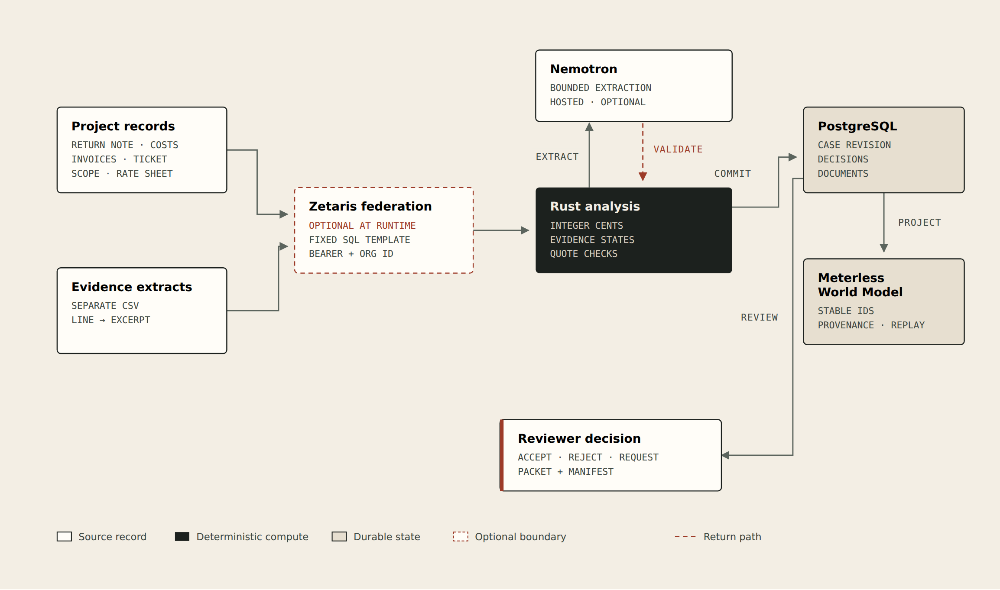

Open Agent Hackathon 2026 · Track 02
Repair the request.
Show the record.
One returned extra-work request, reconstructed from the documents a small contractor already has.
Synthetic demo · no money recovered · no claim approved
01The problem
The work happened.
The request came back.
The change-order tools capture work as it happens. The small contractor's expensive moment is after it is rejected: a folder of tickets, invoices, emails, and contract pages, and three objections to answer.
The workaround is an evening with a spreadsheet and an inbox search. The risk is sending a second, weaker request that overstates the case.
“The scissor lift appears billed twice.”
“We do not have written approval of the $150 overtime rate.”
“Confirm this work sits outside the base scope.”
The insight
Work evidence is not
price authority.
A signed field ticket can prove the crew was on site for sixteen hours and still be unable to approve a rate. Most document tools blur that line. ExtraWork keeps it visible.
The objection
Kept in the counterparty's words, unchanged.
The evidence state
Supported, missing, contradicted, or ambiguous. Never a guess.
The money
Integer cents, deterministic, changed only by a recorded human decision.
The repair
Objection 01: the duplicate
Supported
The cost export repeats L3 and L4. Invoice INV-902 lists the lift once, at $1,000. The second line is the duplicate.
Submitted
$6,800
Supported now
$5,800
| Line | Description | Amount |
|---|---|---|
| L1 | Friday overtime labor | $2,400 |
| L2 | Conduit and wire | $2,400 |
| L3 | Scissor lift Friday | $1,000 |
| L4 · duplicate | Scissor lift Friday | $1,000 |
The total moves only after “Remove the duplicate” is clicked. The scope and rate findings do not move with it.
The refusal
Objection 02: the ticket
cannot close it
Missing
“Crew of 2, 16 overtime hours… No rates stated.” The ticket supports the hours. The sheet rate is $125; the request uses $150.
Apex later emails approval of the $150 rate. The finding flips to supported, and the packet shows the approval sentence — but the app still does not authorize billing.
Before
Rate objection: unresolved
After uploading the approval
Rate objection: answered
The duplicate decision is preserved. New evidence changes one finding, not the whole narrative.
Architecture
One governed join.
Deterministic money.
Rust owns the amounts and the evidence states. The World Model records identity and provenance. Zetaris is the federation boundary when configured.
No model-generated SQL. No model-set totals. No auto-approval.

Sponsor technology
What is real,
and what is not.
| Technology | How it participates | Status in this build |
|---|---|---|
| Meterless | World Model reference projects case entities, findings, documents and citations with stable IDs | Working feature · 8/8 conformance · replay unchanged |
| Zetaris | Fixed SQL join over project lines and evidence extracts via the documented REST API | AWS callback verified · query client built · no live key here |
| NVIDIA Nemotron | Bounded objection extraction on the hosted endpoint; quotes validated against the source | Wired · key absent · rules engine labelled in the UI |
No unused dependency, no logo-only integration. The proof panel states exactly which path ran.
07Why it matters
Small contractors do not
need another dashboard.
They need to know which sentence answers the objection, which number no longer holds, and what to ask for next.
Next validation gate
Three permissioned returned requests, reviewed by a contract administrator. Measure preparation time and whether the packet improves completeness.
Next product surface
A case intake list, reusable rate and scope libraries, and recipient-specific evidence expectations — all on the same deterministic core.
ExtraWork · Repair the request. Show the record.
08